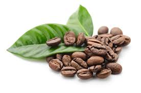
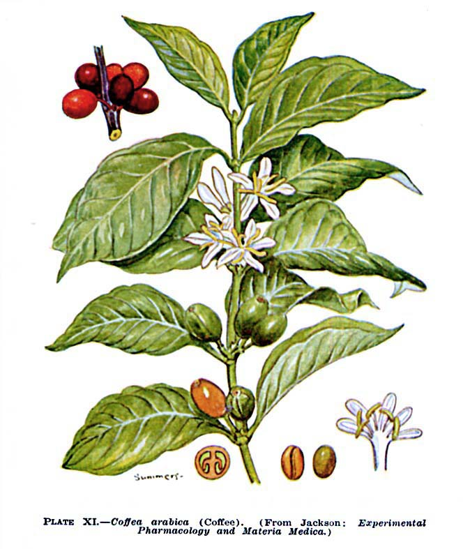
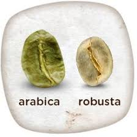
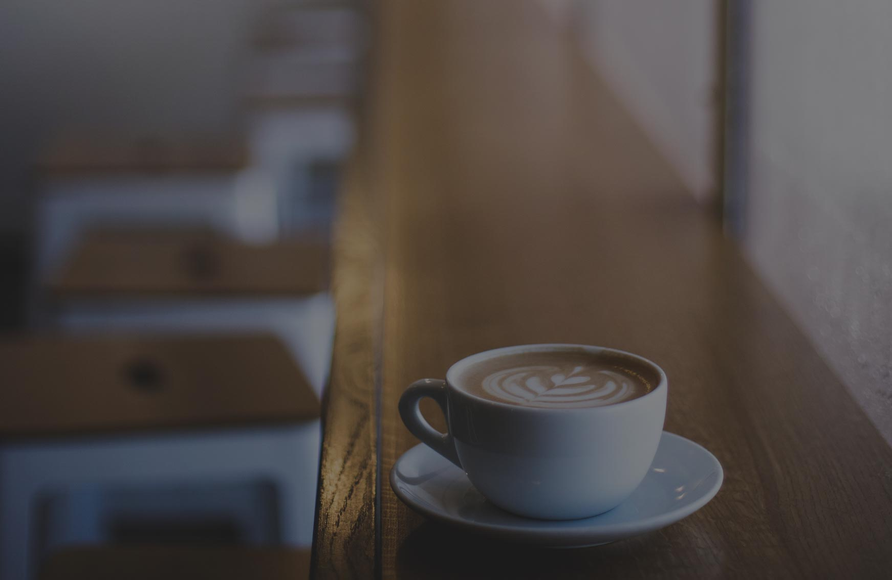
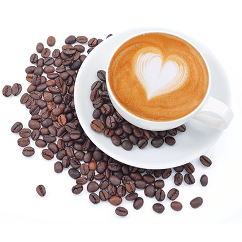
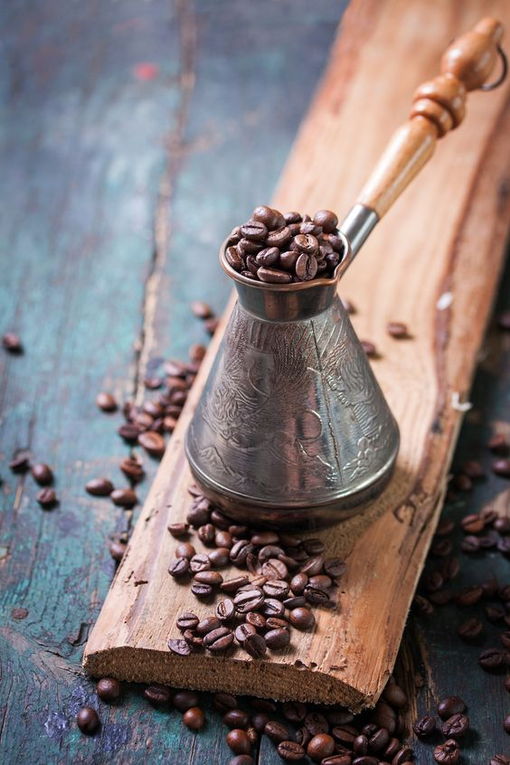

saznaj više

Bobice kafe su jestiva vrsta voća koje sadrži zrna kafe unutar sebe.
Zovemo ih zrnima samo zato što podsećaju na zrnevlje.
Bobice kafe rastu na zimzelenom žbunu biljaka iz roda Coffea.
Kafa se pije širom sveta, ali veći deo nje se proizvede u Africi i Južnoj Americi.
Brazil je najveći proizvođač i izvoznik kafe na svetu, jer je zaslužan za trećinu ukupne proizvodnje kafe.


Postoje dve različite vrste zrnevlja kafe – Arabica zrna i Robusta zrna.
Arabica je daleko popularnija, jer 70% sve popijene kafe na svetu se dobija upravo iz ovog zrnevlja.
Robusta kafa je malo jača, jer njeno zrnevlje u proseku sadrži oko 40% do 50% više kofeina od Arabica-e.
poslušajte savet

Profesionalni degustatori kafe savetuju da dnevno ne treba popiti više od tri šoljice kafe,
jer kafa ne treba da predstavlja teret, već u njoj treba da uživamo i da se uz nju opuštamo.
Preporučuje se kafa posle ručka, jer ona poboljšava varenje, dok se konzumiranje u večernjim
časovima ne preporučuje.
Naučnici smatraju da bi količina kofeina sadržana u približno 100 šolja kafe bila smrtonosna
za čoveka.
da li ste znali
Kafa deluje kao blagi stimulans na mozak i telo, povećava pažnju i koncentraciju.
Počinje da deluje već posle 20-30 minuta nakon konzumiranja, mada i sam miris kafe može da probudi čula.
Zemlje u kojima se konzumira najviše kafe su Finska, Norveška i Island.
Kafa je posle vode napitak koji se najviše konzumira u svetu.
Ovaj napitak ulazi u sve pore života širom planete.

Instant kafa se koristi u porcijama hrane za vojsku, za svemirske letove, za pešačke
pohode kroz neistražene predele i mnoge ekspedicije ekstremne ili uobičajene.
recept

Prvo pravilo kod kuvanja kafe je: jedna džezva - jedna šolja. Obavezno se koristi voda
iz česme, jer su „flaširane vode meke pa kafa nema živost”.
Šećer se dodaje odmah u hladnoj vodu, a nikako kasnije kad je kafa već skuvana.
Kad provri voda, u džezvu dodati jednu kašičicu, može i više ko voli jaču, nikako ne dozvoliti da kafa predugo vri.
Kafa se sipa ispred gosta, a nikako se ne nosi od šporeta do stola u šoljici. Kafu nikako
ne treba piti hladnu.